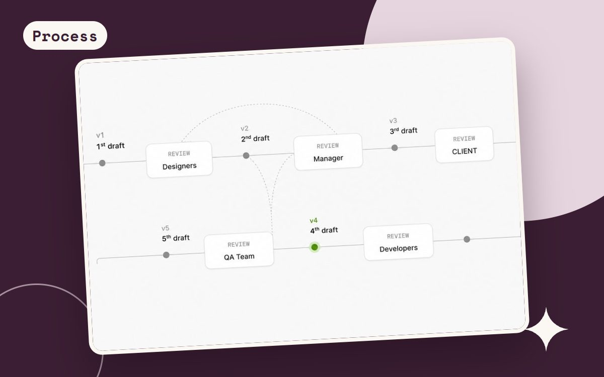

On this page
PROCESS · 3 MIN READ
Waterfall or agile? Pick per risk, not per religion

In 2023 I compared traditional and agile processes and asked which one to choose. After working in healthcare ERP and fast-moving e-commerce, my answer is: both, for different parts of the same project. The deciding factor is the cost of being wrong, and how fast you can find out.
Where upfront structure pays off
NOTES Healthcare ERP integrates BPJS, SATUSEHAT and Dukcapil, and its workflows serve doctors, nurses, pharmacists, administrators and patients. In that environment, getting roles, data and rules wrong is expensive to fix later. So structure comes first: who sees what, which data comes from where, and which principles every screen must follow. On the salary redesign, we agreed on three principles before opening Figma.
Structure before pixels saves rework.
That lesson came from the Catalog Heist too. Mapping page types and states before touching visual design meant fewer surprises later, and a system that could flex as a 500,000-product catalog kept growing.
Where fast iteration wins
Landing pages are the opposite case. They are cheap to change and quick to measure. At DSCommerce I designed 29+ landing pages for the DACH market and improved them through UX optimization and A/B testing. Conversion rose by 116%, and campaign performance reached 2.3× ROAS. No amount of upfront planning would have found those results as fast as testing did.
How design fits into an iterative team
- Stay involved from discovery to release. I partner with product managers and engineers from discovery through design QA, rather than handing off a file and leaving.
- Make handoff exact. Naming Figma variables after the platform's own settings turned handoff into a direct mapping, so developers did not have to guess.
- Keep designing during staging. Bonza is in staging now, and design work continues there: checking each step and state before launch.
Fast shipping needs a safety net
Iterating quickly only works if you catch what breaks. That is why I built automated QA: 413 tests across more than 200 pages, run after every deployment, replacing about three hours of manual checking each time. Speed and quality stop being a trade-off once the checks are automatic.
A simple way to decide
- Expensive to be wrong, slow to learn (data models, regulated integrations, roles): plan upfront.
- Cheap to be wrong, fast to learn (landing pages, copy, layouts): ship, measure, iterate.
- Everything in between: agree on principles first, then iterate inside them.